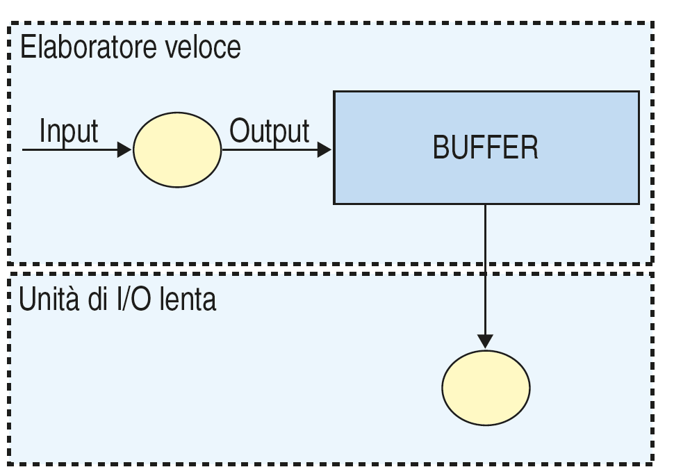
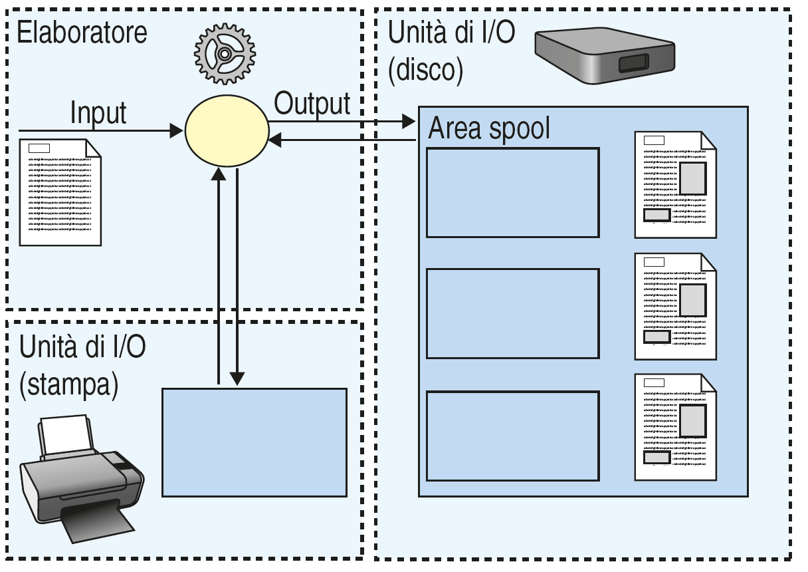

Evoluzione dei sistemi operativi
Classificazione dei sistemi operativi per rapporto uomo macchina:
- Sistemi dedicati
- Sistemi a lotti (batch)
- Sistemi interattivi(conversazionali, in tempo reale, transazionali)
1945-1955
I computer erano: pochi, costosi, lenti e valvolari. Venivano usati usati sopratutto per fare ricerche e per le università.
Il sistema operativo trasferiva blocchi di dati dalla memoria principale a quella ausiliaria.
1955-1965
Gestione a lotti
Esegue programmi da lotti di schede perforate e un lotto (batch) veniva chiamato JOB.
Batch monitor
Primo sistema operativo batch (sviluppato da General Motors per ibm) usava JCL (Job contro language): il linguangio di conversazione con il calcolatore.
Caratteristiche del SO
- SO sempre in memoria
- Un solo Job alla volta in memoria
- Nessuna interazione tra l'utente e il computer durante l'esecuzione di un Job
- In caso di attesa di un evento la CPU resta inattiva
- Scarsa efficienza: la CPU non lavora durante le operazioni di I/O del Job corrente
- Evoluzione: la schede vengono sotituite dai nastri magnetici
Buffer

- Il buffer è una porzione di memoria piccola che serve per salvare i dati velocemente
Spooling

Dischi spool usati come buffer
h2>1965-1980
Sistemi interattivi
- DMA (Direct Memory Accezss (IBM) -> Periferiche che accedono alla memoria direttamente
- Multiprogrammazione:
- Scheduling: Scheduling del Job e Scheduling della CPU
- il SO adesso deve gestire la memoria RAM dividendola per i vari Job in esecuzione
Immagine
- Time Sharing: il SO lascia una quantità di tempo "determinato" ad ogni Job (Time Slice è l'unità di tempo)
Immagine
- Evoluzione: la schede vengono sotituite dai nastri magnetici
Evoluzione:
- DEC -> Computer PDP10
- IBM -> Computer System370
- Memoria principale su circuiti integrati, aritmetica in floating point
- Nuovo SO -> VM 370
- DEC -> Computer VAX (evoluzione del PDP)
- DEC -> Indirizzamento virtuale, demand paging
- Nuovo SO -> Unix
- La multiutenza (più utenti possono usare il computer) porta al problema della "riservatezza" dei dati
Home Computing:
- ATARI (192 da Nolan Bushnell)
- Commodore
- Sinclair
- Computer casalinghi per giochi e intrattenimento.
- Monitor: TV di casa collegato con cavo antenna
- Memoria di massa: prima audiocassette poi Floppy Disk
- SO -> Ogni sitema aveva il proprio e permettevano di programmare in linguaggio BASIC
- Si diffondono perchè costano poco e comincia il mercato dei videogiochi
h2>Sistemi dedicati:
- Computer piccoli per uso casalingo ma più potenti dei Mainframe degli anni 70
- SO:
- 1982-Ms Dos (Micro Soft Disk Operative System) - X86 Intel su PC IBM e IBM compatibili
- Si sviluppa la grafica: i monitor diventano a matrice (pixel), nascono programmi di grafica e si usa il mouse
- 1984-MacOS (Mcintosh Operative System) è il primo sistema operativo grafico che usa il mouse
- 1985-Windows 1 (SO grafico di Microsoft
- Tutti questi sitemi sono detti monoutente perchè il SO non permette il multiutente
h2>Sistemi odierni:
- SO per Server: il server ha il compito di mettere a disposizione dei computer connessi in rete
- dati (file server come NAS) e servizi (come e-mail)
- SO in Tempo Reale: apparecchi Real Time servono a gestire computer che hanno necessità di dare risultati in tempo reale.
- ad esempio calcolatori che servono a gestire lo spazio aereo, a far scattare un Airbag di una autovettura
- si dividono in Hard Real Time(il tempo è gestito dall'Hardware perchè non suò essere ritardato il risultato.
- e Soft Real Time: possono essere gestiti ritardi.
- SO Embedded: un dispositivo che è considerato un blocco unico hardware e software con sistemi dedicati:
- telefoni cellulari, elettrodomestici, palmari
- SO su Smart Card: le Smartcard sono piccolissimi computer completi molto diffusi come le Carte di Credito, i Documenti digitali
- (Patente di guida, Carta di Identità), chiavi elettroniche per sblocco porte, carte di vicinanza (non ancora molto diffuse)
- hanno dei SO scritti da software house come la stessa Microsoft
- SO per Smartphone: ormai diffusissimi gli smartphone utilizzano principalmente i SO iOs della Apple (solo Iphone Apple) oppure Android
- di proprietà di Google utilizzato da quasi tutti gli altri produttori (Motorola, Samsung, Xiaomi) ma ci sono stati anche
- altri SO come BlackBerry (solo su Smartphone BlackBerry), Symbian (sui primi Smartphone della Nokia) e Windows Phone